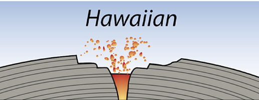
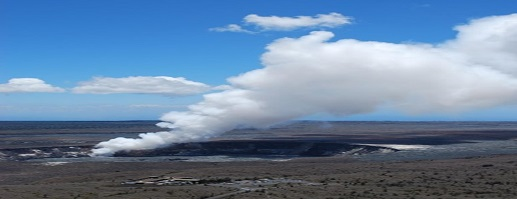
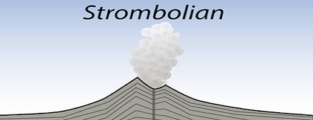
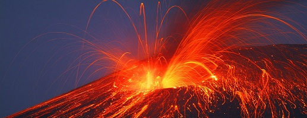
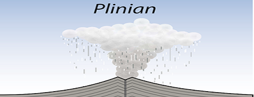
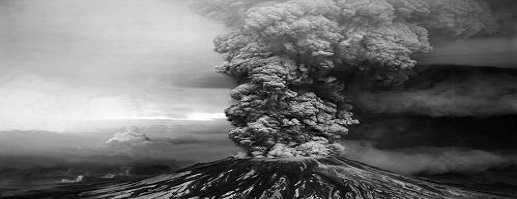

Gunung api terbentuk pada empat busur, yaitu busur tengah benua yang diakibatkan oleh pemekaran benua, busur tepi benua yang diakibatkan adanya penunjaman kerak samudera ke dalam kerak benua, busur tengah samudera yang diakibatkan pemekaran kerak samudera, dan busur dasar samudera oleh magma yang menerobos kerak samudera. Keempat busur tersebut terbentuk karena adanya pergerakan lempeng-lempeng sebagai berikut:
1. Pemekaran kerak benua, dimana lempeng bergerak saling menjauh sehingga memberikan kesempatan magma bergerak ke permukaan dan membentuk busur gunungapi tengah samudera.
2. Tumbukan antar kerak, dimana kerak samudera menunjam ke bawah kerak benua. Akibat gesekan yang dihasilkan oleh antarkerak tersebut, terjadi peleburan batuan dan lelehan batuan ini bergerak ke permukaan melalui rekahan kemudian membentuk busur gunungapi di tepi benua.
3. Kerak benua saling menjauh secara horizontal, sehingga menimbulkan rekahan atau patahan.
4. Penipisan kerak samudera akibat adanya magma yang menerobos dasar samudera yang membentuk deretan gunung api perisai.
Plate Tectonics (Sumber: ugc.berkeley.edu)
Erupsi merupakan peristiwa keluarnya magma di permukaan bumi dengan bentuk yang berbeda-beda. Setiap gunung api memiliki sifat dan proses tektonik yang dapat mempengaruhi aktivitas dari gunung api itu sendiri. Tipe erupsi yang dimiliki oleh gunung api ditentukan berdasarkan pada intensitas erupsinya, yaitu seperti tingginya kolom letusan, jangkauan material letusan, serta volume material letusan (Mulyaningsih, S., 2019). Berdasarkan laman resmi Kementerian Energi dan Sumber Daya Mineral Badan Geologi, erupsi gunung api dapat bersifat efusif merupakan erupsi berbentuk aliran lava, dimana gunung akan mengeluarkan lava secara perlahan dan mengalir keluar tanpa adanya ledakan. Selain itu, gunung api juga dapat bersifat eksplosif dimana gunung api tersebut akan mengeluarkan magma dalam bentuk ledakan dan membentuk endapan piroklastik. Kementerian Energi dan Sumber Daya Mineral Badan Geologi membagi tipe erupsi menjadi 3 tipe berdasarkan tinggi rendahnya derajat fragmentasi, kuat lemahnya letusan, dan tinggi asap. Pembagian tipe erupsi sebagai berikut:
| Gambar | Penjelasan |
|

Tipe Erupsi Hawaiian (Sumber: Bierman, P & Montgomery, D.,2014) Erupsi Hawaiian Gunung Kilauea (Sumber: usgs.gov) |
Tipe Erupsi Hawaiian merupakan tipe erupsi yang berlangsung di sepanjang rekahan atau celah (feasure eruption) yang paling banyak dijumpai di zona pemekaran lantai samudra, zona hotspot, dan pulau gunung api. Erupsi Hawaiian dicirikan dengan magma yang encer (MORB) dengan material erupsi berupa lelehan. Tipe erupsi Hawaiian banyak dijumpai di Hawaii seperti erupsi Gunung Mauna Loa, Gunung Kilauea, dan di Indonesia sendiri terdapat Gunung Tangkuban Perahu yang menjadi salah satu contoh erupsi tipe Hawaiian ini. |
|

Tipe Erupsi Strombolian (Sumber: Bierman, P & Montgomery, D.,2014) Tipe Erupsi Strombolian Gunung Etna (Sumber: swisseduc.ch) |
Tipe Erupsi Strombolian merupakan erupsi lava pijar yang menyembur seperti air mancur dan dihasilkan dari magma yang dangkal hingga kemudian membentuk gugusan yang melengkung. Tipe erupsi Strombolian ini merupakan erupsi yang tidak begitu kuat, namun terjadi secara terus menerus sehingga tidak dapat diperkirakan kapan semburan terakhir terjadi. Umumnya erupsi Strombolian terjadi pada gunung api di tepi benua ataupun di tengah benua. |
|

TTipe Erupsi Plinian (Sumber: Bierman, P & Montgomery, D.,2014) Tipe Erupsi Plinian (Sumber: wfdd.org) |
Tipe Erupsi Plinian merupakan salah satu erupsi gunung api dengan viskositas yang tinggi dengan magma yang bersifat asam. Tipe erupsi ini dicirikan dengan pembentukan kolom letusan setinggi kurang lebih 45 km yang melontarkan material dinding dan isi kawah gunung api. Tipe erupsi Plinian merupakan tipe erupsi sangat eksplosif yang kaya akan gas laten dan kemudian membentuk awan yang menyerupai kelopak bunga. Erupsi dengan komposisi magma yang bersifat andesitik hingga riolitik ini memiliki kecepatan gaya konveksi letusan ratusan meter per detik dan menghasilkan tefra yang sangat tebal dengan sebaran yang luas. |